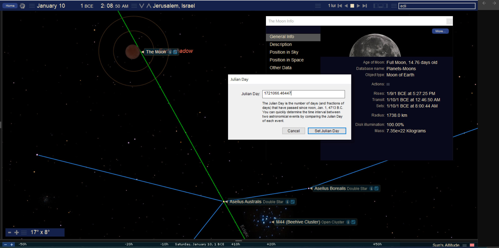
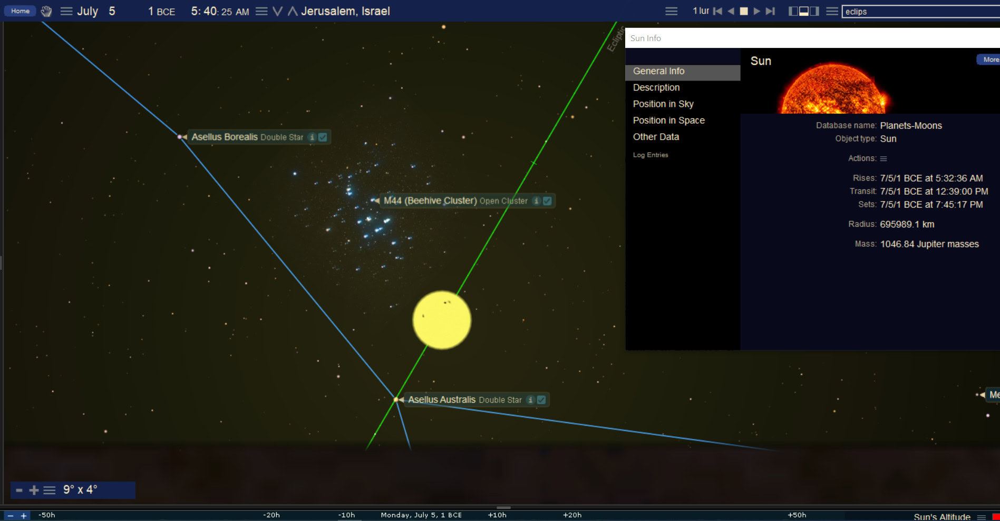
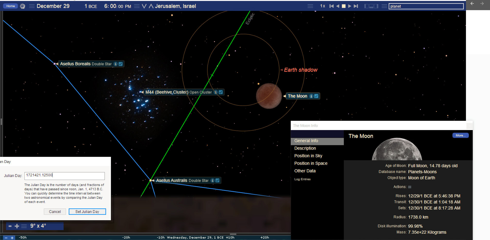
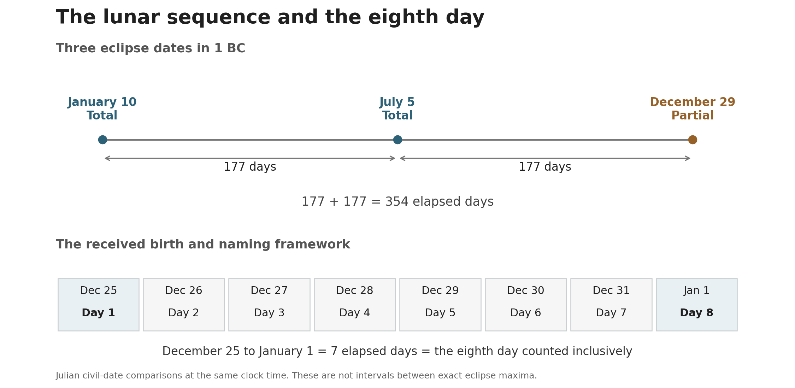

The Moon and the Manger
Book 2 · Celestial Signs of the First Advent · Chapter 3
Book 2 · 19 October 2026
“You will find a baby wrapped in swaddling cloths and lying in a manger.”
Luke 2:12b, BSB
The manger is an earthly sign given to the shepherds. They are told what to look for, and the heavenly host appears with the announcement. Luke places the humility of the Child beside heaven’s knowledge of who He is. That is where I begin this chapter’s comparison with the cluster of stars called the Manger.[1]
The comparison concerns three lunar eclipses in 1 BC and their relationship to the received birth and naming framework. It brings the Moon, the Sun, and the Manger cluster into a sequence that can be followed through the year. I read that sequence alongside John the Baptist’s witness to Christ and the coming of the Child Himself.
The distinction established in the first two chapters remains in place. The Repository retains 6 BC as its historical birth anchor and December 25, 1 BC, with January 1, AD 1, as a distinct received birth and naming framework. Here I examine the latter framework. These signs do not independently establish the historical birthday of Jesus.[2]
The witness before the Light
Luke begins the birth account with two households. Elizabeth conceives John; the announcement to Mary follows while Elizabeth is in her sixth month. The children are related from the beginning, but their roles are different. John prepares the way for the One whose coming he will announce.[3]
John’s Gospel makes that relationship explicit. John the Baptist bears witness to the Light. Later, Jesus describes him as a lamp, and John accepts the increase of Christ’s work as his own place recedes. His purpose is fulfilled in directing people to Jesus.[4]
I read the Moon and Sun through that relationship. The Moon gives reflected light and rules the night; the Sun supplies the greater light of day. In this comparison the Moon speaks of the witness who goes before, and the Sun of Christ. This is a symbolic reading of the lights, grounded in the Gospel’s distinction between the witness and the One to whom he testifies. It is not a claim that John’s Gospel names the physical Moon as John the Baptist.
An eclipse gives that comparison an additional action. At full Moon, earth lies between the Sun and Moon. If the alignment carries the Moon through earth’s shadow, the borrowed light is diminished. The Moon remains present, and sunlight passing through earth’s atmosphere can still illuminate it. A total lunar eclipse therefore need not make the Moon disappear completely.[5]
The imagery invites comparison with a witness whose light serves another. I do not derive John’s life from the lunar orbit. I place the calculated event beside the scriptural relationship and ask whether it bears a fitting witness to it.
The Manger among the stars
The object called M44 is a cluster of stars in Cancer. It is also called the Beehive or Praesepe, Latin for “manger.” It is a star cluster within a constellation, rather than a separate constellation called the Manger. Its appearance as a faint patch of light belongs to the physical sky; its name supplies the image used in this chapter.[6]
That name brings the comparison close to Luke’s account. The place where the Child is laid is ordinary enough for the shepherds to recognize. Heaven’s announcement gives it significance. I suggest that the celestial Manger can likewise serve as a familiar image through which the coming of Christ is witnessed.
The association does not depend on putting the whole scene of Bethlehem among the stars. Luke identifies a particular Child in a particular place. M44 contributes the manger image to the proposed heavenly witness. The cluster and the place where Mary laid her Son remain different things.
We can now follow what actually occurs around that region of sky. The three eclipses do not all place the Moon at the same spot. That change is part of the sequence.
Three eclipses in one year
NASA’s catalog lists a total lunar eclipse on January 10, another total on July 5, and a partial on December 29 in 1 BC. The dates below are Julian. NASA calls the year “0000” because its astronomical numbering includes a year zero; that is the same year historians call 1 BC.[5]
| Julian date in 1 BC | Eclipse type | Circumstances at Jerusalem |
|---|---|---|
| January 10 | Total | The umbral eclipse occurs during the night, with the Moon well above the horizon. |
| July 5 | Total | The umbral eclipse occurs after the Moon has set and before it rises again. |
| December 29 | Partial | The Moon rises near sunset with the partial eclipse already in progress. |
A total eclipse carries the whole lunar disk into earth’s central shadow, the umbra. In a partial eclipse, only part of the disk enters it. These are physical descriptions of the events. Visibility at Jerusalem is a further question, which is why it has its own column.
The January and December dates are 354 days apart. July 5 divides that civil-date interval equally: 177 days from January 10 to July 5, and another 177 to December 29. These are date-to-date counts at the same clock time. The actual eclipse maxima occur at different hours, so their exact elapsed intervals are not two identical periods of 177 days.[7]
January and the opening witness
The January eclipse passes deeply through earth’s shadow. The entire umbral phase has a nighttime opportunity above Jerusalem’s horizon, with totality lasting about 99 minutes in NASA’s calculation. The supplied plate shows the eclipsed Moon in the wider Cancer region, with the Manger cluster lower in the field.


The Moon is in the same broad region of sky as M44, but it does not cover the cluster. At greatest eclipse the calculated separation from the cluster’s reference position is about 8.4 degrees. The illustration supplies the setting; the number prevents a loose phrase such as “at the Manger” from becoming a claim of exact contact.[8]
The event belongs near the opening of the Julian year. From January 10 to the received birth date, December 25, there are 350 elapsed days, exactly 50 weeks. From January 10 to the December 29 eclipse there are 354. Those are two different comparisons, each with its own endpoint.
I read the January event as an opening witness within the year being examined. The lunar light is brought into shadow, and the Manger region is already within the scene. Its meaning develops through the later events rather than being completed by this first picture alone.
July and the Sun at the Manger
In July the arrangement changes. The Sun is near M44, while the full Moon is on the opposite side of the sky. The supplied sunrise plate shows the Sun beside the Manger cluster on July 5. The lunar eclipse occurs later that day.


At the eclipse maximum, the Sun is about 1.6 degrees from the cluster’s reference position. The eclipsed Moon is almost opposite it, about 178 degrees away. A full Moon cannot be beside the Sun in the sky. Thus the July Manger image belongs to the Sun, not to the Moon.[8]
This distinction strengthens the comparison I am making. The Moon bears its eclipse elsewhere while the greater light stands beside the Manger. Read through the witness-and-Light relationship, the scene directs attention beyond the lunar witness toward Christ.
The cluster would not have been visible beside the Sun as the software displays it. The plate reveals a calculated relationship by allowing the stars to remain on screen. The eclipse itself also falls below Jerusalem’s horizon: its umbral phase occurs during the local morning and early afternoon, after moonset.[9]
Those conditions limit any claim about what people in Jerusalem saw. They do not remove the alignment from the heavens. The book’s perspective allows a sign to matter before a heavenly audience even when the local human audience cannot see it. Here that distinction is essential to describing the scene truthfully.
The working comparison places John’s circumcision on this July 5 date and measures forward to the received January 1 naming and circumcision of Jesus. The interval is 180 days. I retain that as a proposed calendar relationship, rather than a recovered date for John’s ceremony. Luke tells us that Elizabeth was in her sixth month when Gabriel came to Mary; he does not provide July 5 as a Julian date or define the interval as exactly 180 days.[3][10]
The proposed connection is therefore specific: a lunar eclipse associated with the witness, a solar Manger image on the same date, and a 180-day span to the naming of the Child in the received framework. The astronomical event is calculated. The assignment of John’s ceremony to that event is the interpretive step.
December and the rising Moon
The third eclipse occurs on December 29, four civil days after December 25 and three before January 1. This time the Moon itself lies near the Manger cluster. It rises in the east around sunset while part of it remains within earth’s shadow.


The Moon is rising here. It is not setting with the Manger, as some of the old filenames and descriptions say. The original image makes the direction recoverable: the scene is an evening view at Jerusalem, and the Moon is low above the eastern horizon. The corrected caption retains the supplied picture while describing its motion accurately.
The local calculation gives an apparent moonrise near 17:10 Jerusalem local mean solar time, with the umbral phase ending near 18:10. Those rounded times describe about an hour of geometric opportunity above a smooth horizon. The deepest part of the eclipse occurs shortly before moonrise. Terrain, haze, and the low altitude affect what a person might actually see; this is not an eyewitness report.[9]
The Moon is a few degrees from the cluster, about 3.3 degrees at the calculated eclipse maximum. “Beside the Manger” is an appropriate broad description. It does not mean the Moon passes across the cluster or lies at a point precisely marked as its center.[8]
In July, the Sun stood near the Manger while the Moon was eclipsed elsewhere. In December, the eclipsed Moon rises near the Manger itself. I read the movement as a return of the witness to the place associated with the Child. The received birth and naming dates give that return its immediate calendar setting.
Seven elapsed days and eight counted dates
December 25 to January 1 is seven elapsed days. When December 25 is counted as day one, January 1 is day eight. That is the inclusive count preserved by the Repository for the received birth, circumcision, and naming framework.[2]


Luke records both children being circumcised on the eighth day, with their names given in accordance with the announcements. The same covenant practice connects the two accounts. The January 1 datum in this book gives the received Christ comparison a definite endpoint without claiming that Luke supplies that civil date.[1][3]
The principal civil-date intervals can be kept together.
| Beginning | End | Elapsed days |
|---|---|---|
| January 10, 1 BC | December 25, 1 BC | 350 |
| January 10, 1 BC | December 29, 1 BC | 354 |
| July 5, 1 BC | January 1, AD 1 | 180 |
| December 25, 1 BC | January 1, AD 1 | 7 |
The last row becomes the eighth day only when we count the dates inclusively. We do not add a day to elapsed time. Nor does the label “AD 1” insert a year zero between 1 BC and AD 1. The two civil years are consecutive.
The December eclipse falls within this received eight-day sequence, on its fifth counted date. It stands between the birth datum and the naming datum. That is its place in the comparison; the eclipse is not being moved onto Christmas or New Year’s Day.
The spring threshold and the count of 280
There is a further count in the raw material that deserves to be preserved with its endpoints clear. Counting back 280 elapsed days from December 29, 1 BC, reaches March 24 of that year. The vernal equinox falls near March 22, and a calculated new Moon occurs on March 24.[11]
This puts the beginning of the count at a spring threshold. It offers a natural setting for comparison with the erection of the Tabernacle at the opening of the first month in Exodus 40. John’s statement that the Word made His dwelling among us supplies the related Incarnation language; the BSB footnote gives the alternative wording “tabernacled among us.”[12]
The number 280 is familiar from the gestation comparisons already examined in Book 1. Here it reaches the December 29 eclipse witness. It does not reach December 25: March 24 to December 25 is 276 elapsed days. Keeping those endpoints visible allows the gestation image to remain a comparison without quietly changing the received birth date.
Nor does the astronomical conjunction by itself establish a historically proclaimed Nisan 1. Beginning a month at conjunction, beginning it that evening, and beginning it after a visible crescent are different rules. This chapter identifies the new Moon near the spring equinox and the 280-day civil-date relationship. The Nisan and Tabernacle association is the proposed calendar reading.[11]
I see the birth imagery extending from the opening of the year toward the Child at the Manger and His naming. The calculation gives that reading a definite form. It does not recover the date of Mary’s conception from a sky chart.
The later lunar answer
These three eclipses also prepare a comparison with the Passion period. In NASA’s lunation numbering, each has a later counterpart 399 lunar cycles ahead: January 10, 1 BC, to April 14, AD 32; July 5, 1 BC, to October 7, AD 32; and December 29, 1 BC, to April 3, AD 33.[13]
Counting the starting position as well as the ending position gives 400 numbered positions. That is an inclusive count of positions across 399 cycles, rather than 400 elapsed lunar months. The distinction is the same kind we have just used for the eighth day.
The later chapter on the Moon beside the Cross will develop the Passion sequence. Here the correspondence supplies a forward connection: the birth-side events are two totals followed by a partial, and so are these later counterparts. I read the relationship as a witness joining the coming of Christ to the death through which His work is accomplished.
That comparison must also remain distinct from Book 1’s exact count of 77 × 153 days. December 29, 1 BC, to April 3, AD 33, is 11,783 elapsed civil days. The authorized Book 1 count is 11,781 days from January 1, AD 1, at midnight to April 4, AD 33, at midnight. The eclipse-to-eclipse comparison and the naming-to-final-boundary count have different endpoints and perform different work.[14]
From the Manger to the promise
The sequence has brought the lesser light and the greater light into relation with the Manger, then carried the count toward the naming of the Child. I read it as a witness to His coming. Its significance does not depend on every part being visible to someone in Jerusalem, or on the surviving record telling us what heaven understood.
Luke’s account already asks us to hold the earthly and heavenly views together. Shepherds need to be told where to go. The heavenly host knows whom to praise. The Child lying in the manger belongs to the same reality as the glory surrounding the announcement. Human obscurity does not diminish His place in heaven’s knowledge.
The next chapter returns to Abraham and the promise that the blessing would reach the nations. That promise gives the wider history its direction. The Child at the Manger is the reason this book will now move backward through that history before following His ministry, the Cross, and the Gospel’s passage into the world.
Sources and calculation notes
1. Luke 2:8–21. The opening quotation is the second sentence of verse 12. The shepherds’ sign is the Child in the manger, not an identification of a star cluster. Return
2. File 13 — Christological Matrix, working state register and §§7.1–7.4. Preserve the historical 6 BC anchor, the wider Incarnation framework, and the distinct December 25, 1 BC / January 1, AD 1 received calendar data. This chapter does not merge their date states. Return
3. Luke 1:26, 36, 57–66. The sixth-month setting is relative to Elizabeth’s pregnancy; both the exact Julian date and the proposed 180-day interval are additional calendar assignments. Return
4. John 1:6–9, John 3:27–30, and John 5:33–36. The Sun/Moon application is the author’s symbolic comparison. Return
5. Fred Espenak and Jean Meeus, NASA/GSFC lunar eclipse catalog for astronomical years −99 to 0, rows 04821–04823; catalog explanation. Catalog maximum times are dynamical time. January 10’s maximum falls on January 9 in UT under NASA’s model, but on January 10 in Jerusalem local mean time. The diagram dates follow the catalog and the local sequence. An eclipse’s global occurrence does not establish a local eyewitness observation. Return
6. NASA’s Messier 44 description identifies the open cluster in Cancer. The Starry Night Companion, printed page 152, gives Praesepe’s meaning as “manger.” The cluster reference position used in the calculations is the official Swiss fixed-object catalog entry for M44; a cluster has extent rather than a single visible center. Return
7. Noon-UT Julian Day Numbers for the three named dates are 1,721,067; 1,721,244; and 1,721,421. Their differences are 177, 177, and 354. July’s older 1,721,214 entry is a transcription error, 30 days too small. All date-to-date intervals in this chapter use like clock boundaries; eclipse instants are recorded separately. Return
8. Fresh Swiss Ephemeris 2.10.03 Moshier calculation, with the official M44 reference entry propagated to the epoch. At the respective modeled eclipse maxima: January Moon–M44 8.43°; July Sun–M44 1.61° and Moon–M44 178.24°; December Moon–M44 3.27°. These are geocentric angular distances, not physical distances between the objects. The source plates depict nearby instants, not necessarily the exact maxima. Return
9. Jerusalem model: 31.778° N, 35.235° E, elevation 754 m, pressure 927 hPa, temperature 15°C; smooth horizon, no terrain or extinction. NASA’s catalog ΔT values of 10,534, 10,529, and 10,524 seconds are used for the three events. The fresh model gives December moonrise about 17:07 LMT and umbral end about 18:07 LMT; the older master gives approximately 17:09 and 18:09. Prose rounds to about 17:10 and 18:10. Exact ancient clock times and an observed color are not claimed. Original software clocks are preserved, not silently relabeled as LMT. Return
10. The proposed July 5 John reference comes from raw Section 5A and the Christ Window registry. July 5 to January 1 is 180 elapsed civil days. This chapter does not call July 5 an established historical or universally received circumcision date. Return
11. March 24 to December 29 is 280 days; March 24 to December 25 is 276. A fresh model places the equinox on March 22 and the conjunction on March 24. These calculations use the default Swiss Moshier ΔT model for the spring events. File 12 — Calendrical Physics controls calendar distinctions; File 14 — Biological and Numerical Fractals keeps its 270, 273, 275, 276, and 280 comparison states distinct. The chapter’s 276-day civil interval is not a new derivation of File 14’s separate 276-year boundary display. Return
12. Exodus 40:1–2, 17 and John 1:14 with footnote b. The Tabernacle/Incarnation link is typological; it does not date Mary’s conception. Return
13. NASA’s AD 1–100 lunar catalog, rows 04902–04904, compared with 04821–04823. The lunation-number differences are −24,338 − (−24,737) = 399; −24,332 − (−24,731) = 399; −24,326 − (−24,725) = 399. These are synodic lunation indices, not a Saros identity. Counting both indexed endpoints gives 400 positions. Return
14. 77 × 153 = 11,781. Julian January 1, AD 1, midnight to April 4, AD 33, midnight preserves Book 1’s authorized boundary. The 11,783-day December-to-Passion eclipse-date comparison does not replace it. Detailed source excerpts, original images, NASA plates, scripts, and the calculation record accompany the publication files. Return
Scripture quotations: Berean Standard Bible (BSB), public domain.
← Previous: Chapter 2 — The Woman the Child and the King
Book 2 contents
Next: Chapter 4 — Abraham and the Promise to the Nations →